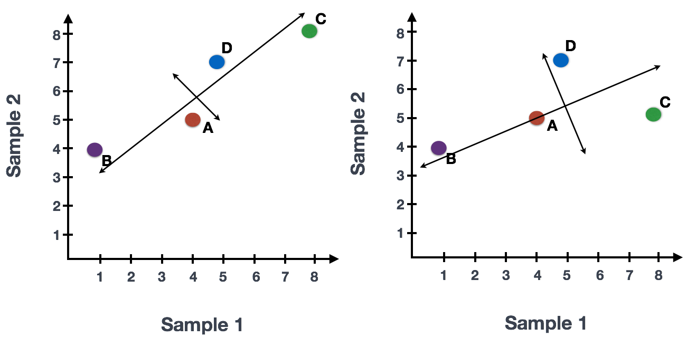

PCA and dimensionality reduction
UM Bioinformatics Core
2024-02-19
Workflow Overview

Introduction
For a single sample, we expect to see up to ~10-12,000 cells captured with up to 19,000 genes measured per cell. This means that even after filtering the data, we are working very “high dimensional” data, which requires reducing and selecting a subset of possible dimensions.
Similar to the previous sections, the process of selecting informative dimensions in a dataset is often iterative and multiple dimensions may have lead to similar results/conclusions but only a single value is likely to be reported.
In this section, we will demonstrate the steps to perform dimensionality reduction on our data using principal component analysis (PCA).
Objectives
- Understand why we use PCA for dimensionality reduction
- Choose an appropriate number of principal components to cluster our data
Dimensionality reduction
In addition to the “high dimensionality” expected for single-cell data, due to technical limitations of both capture and sequencing as well as biological variability, we expect the data to be both “sparse”, as many genes will either not be expressed or not measured in many of the cells, and “noisy” with higher variance expected ref. Single-cell data was previously described as “zero inflated”, however work by Svensson has challenged that characterization, and the higher number of zeros observed in scRNA-seq compared to bulk RNA-seq is more likely due to biological variance and lower sequencing saturation than technical artifact.
For sparse high dimensional biological data, we expect many genes to have correlated expression as they would be impacted by the same biological process and for many genes with either low (more noisy) or similar expression across the cell population.
So how do we determine what and how many genes to use before classifying cells in our samples into cell-types/subtypes based on their expression?
More on dimensionality reduction
The Ouyang Lab has a “gentle introduction” section of their materials that that goes into greater details on dimensionality reduction including how similar strategies are used in deep learning models.
What is PCA?
If we consider a smaller dataset measuring the expression of four genes measured in just two cells, we could plot the expression of those four genes, with data from one cell plotted on the x-axis and the second cell plotted on the y-axis/

If we wanted to represent the most variation across the data, we would draw a diagonal line between gene B and gene C - this would represent the first principal component. However, this line doesn’t capture all the variance in this data as the genes also vary above and below the line, so we could draw another line (at a right angle to the first) representing the second most variation int the data - which would represent the second principal component (PC).
However, an important aspect is that the genes near the end of each line are those with the greatest influence on the direction and length of the PC, as those genes have the highest variation.

We’ll skip the process of calculating the score for each cell per PC but after running PCA on our data, we expect each cell to have a score based on the expression of the genes contributing to each PC and each gene will have a weight or loading, with some genes contributing more to a given PC. This reduction in dimensionality, from 10,000 cells x 19,000 genes for example, to 10-60 PCs allows us to example how the variation in our dataset related to our expected cell composition and select PCs that are more likely to distinguish biological variation instead of technical (uninteresting) variation.
To read more, please refer to the HBC - Theory of PCA content, from which this section is adapted. HBC also recommend the original source material - Josh Starmer’s StatQuest video; for additional detail, as well as the OSCA chapter on Principle components analysis that includes a more descriptive overview of PCA in the context of single-cell data.
Run PCA on our dataset
To execute PCA on our dataset, we will use Seurat’s built-in function
RunPCA:
geo_so = RunPCA(geo_so, reduction.name = 'unintegrated.sct.pca')And we can see the additional assay added by viewing the
geo_so Seurat object:
geo_so# Add expected output from command
We can also visualize both the cell and gene features that define each principle components using Seurat provided functions.
First, we can print out the top 5 (gene) features per dimension by accessing that part of the Seurat object:
print(geo_so[["pca"]], dims = 1:5, nfeatures = 5)We can also highlight genes loaded for each dimension using a visualization:
VizDimLoadings(geo_so, dims = 1:2, reduction = "pca")We can look at how cells load on the first two principle components,
similarly to how we often look at samples for bulk RNA-seq, with the
DimPlot function:
DimPlot(geo_so, reduction="pca")Lastly, a common visualization used in Seurat tutorials is
DimHeatmap(), which orders both cells and features
according to their PCA scores and allows us to see some general patterns
in the data:
DimHeatmap(geo_so, dims=1:3, cells=500, balanced=TRUE)How does Seurat use PCA scores?
Per the Ho Lab’s materials - “To overcome the extensive technical noise in any single feature for scRNA-seq data, Seurat clusters cells based on their PCA scores, with each PC essentially representing a ‘metafeature’ that combines information across a correlated feature set. The top principal components therefore represent a robust compression of the dataset.”
Choosing the number of significant PCs for dimensionality reduction
You have a biological question - starting point is understanding the “resolution” of your biological questions
How are you defining a “cell type” or “subtype” should help with ambiguity around questions like, “How do I decide how many PCs to include?”, “How do I choose a resolution for the UMAP?”, etc.
Related - how important is that decision to the downstream impact (e.g. how much does changing the number of PCs change the clustering)?
Why not use every PC? Higher resolution risks including uninteresting variation (biological vs statistical “significance”) and a single-cell itself is not a functional unit
Visualizing relative contributions of each PC
elbow_plot = ElbowPlot(geo_so, ndims = 50, reduction = 'unintegrated.sct.pca')Using a (crude) optimization to select a starting point
Function to return minimum PCs based on two possible metrics:
# Function to determine optimal PCs after RunPCA()
optimal_pcs = function(so, reduction) {
# quantitative check for number of PCs to include
pct = so@reductions[[reduction]]@stdev / sum(so@reductions[[reduction]]@stdev) * 100
cum = cumsum(pct)
co1 = which(cum > 90 & pct < 5)[1]
co2 = sort(which((pct[1:length(pct)-1] - pct[2:length(pct)]) > .1), decreasing = T)[1] + 1
pcs = min(co1, co2)
return(pcs)
}If we apply this function to our data, then we expect a number of PCs somewhere within the bend of the elbow plot to be returned:
optimal_pcs(geo_so, 'unintegrated.sct.pca')23Again, this number is likely a starting point and may need to revise depending on the outcome of the downstream steps.
While outside the scope of this workshop, there are community efforts to develop more sophisticated methods to select like the [chooseR package] or the option to use clustering trees to evaluate the stability of this parameter choice.
Summary
Now that we have selected a number of principal components that likely correspond to biological variation of interest, we will use that number in the clustering steps in the next section.
Next steps: Clustering and projection
These materials have been adapted and extended from materials listed above. These are open access materials distributed under the terms of the Creative Commons Attribution license (CC BY 4.0), which permits unrestricted use, distribution, and reproduction in any medium, provided the original author and source are credited.
| Previous lesson | Top of this lesson | Next lesson |
|---|